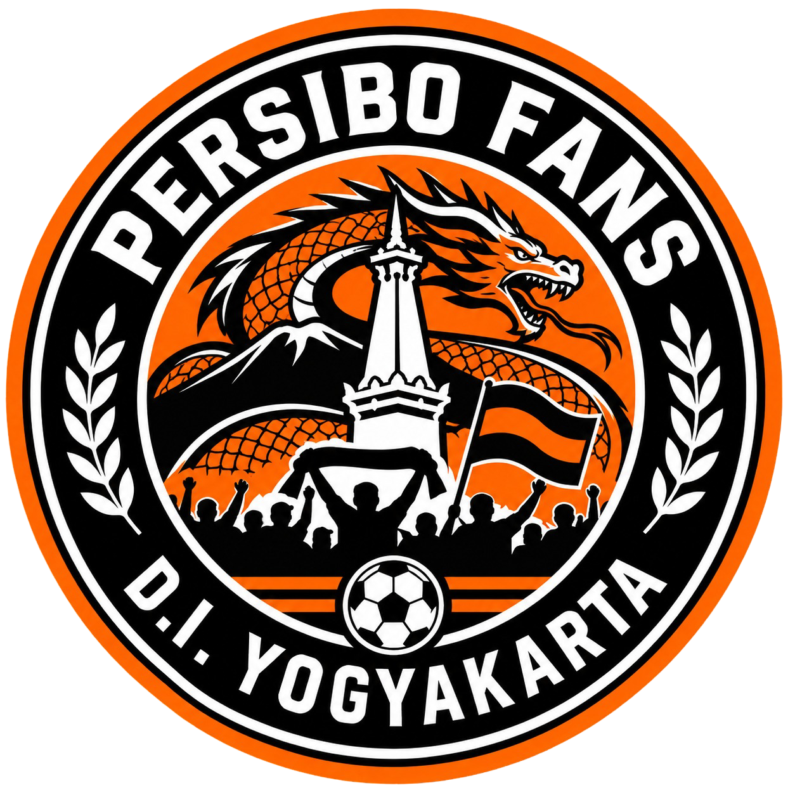

01
NONTON BARENG
Merayakan setiap pertandingan Persibo bersama keluarga PFJ.

PERSIBO FANS JOGJAJauh dari rumah bukan alasan untuk berhenti bersuara. Kami adalah keluarga Persibo yang tumbuh, berkumpul, dan berjuang dari Daerah Istimewa Yogyakarta.
LEBIH DARI SEKADAR DUKUNGAN
Persibo Fans Jogja adalah komunitas pendukung Persibo Bojonegoro yang berdomisili di Daerah Istimewa Yogyakarta.
Berangkat dari kecintaan yang sama, kami hadir sebagai ruang untuk menjaga persaudaraan, merawat identitas, dan menyalurkan dukungan untuk Laskar Angling Dharma. Berbeda tempat tinggal, tetap satu kebanggaan.
KENALI KELUARGA PFJ ↗Menjaga rasa persaudaraan di dalam dan di luar tribun.
Membawa kebanggaan daerah ke mana pun langkah membawa.
Dukungan yang tumbuh dari hati, bukan sekadar hasil akhir.
JARAK HANYA SOAL PETA.
LOYALITAS TAK PUNYA BATAS.
SATU KOMUNITAS, BANYAK CERITA
Dari layar pertandingan hingga pertemuan langsung, semangat Laskar selalu punya tempat untuk dirayakan.
Merayakan setiap pertandingan Persibo bersama keluarga PFJ.
Mempererat persaudaraan dan membuka ruang untuk anggota baru.
Menghadirkan kegiatan positif dan kontribusi nyata di sekitar kita.
* Informasi agenda dan kegiatan terbaru akan diumumkan melalui kanal resmi komunitas.
TEMPATMU ADA DI SINI
Punya darah Bojonegoro, sedang merantau di Jogja, atau sekadar punya cinta yang sama untuk Persibo? Mari saling kenal dan tumbuh bersama.
HUBUNGI KAMI ↗ ONCE LASKAR